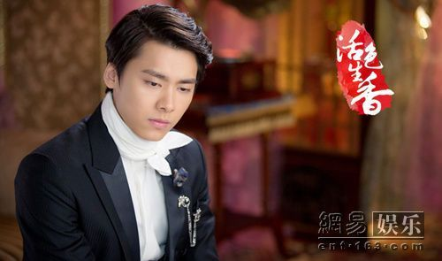

李易峰演艺经历
2014年7月2日，古装仙侠剧《古剑奇谭》首播获得了全国同时段电视剧收视率第一，网络播放量突破50亿，单集平均点击量则突破1.5亿的成绩，李易峰在剧中饰演男主角百里屠苏，并为该剧演唱插曲《剑伤》、《剑心》。8月1日，首发写真书《壹刻》限量纪念版，开售23秒10001册即被抢购一空。同年7月，李易峰与陈意涵、江铠同等人联袂主演的都市青春励志剧《小时代之折纸时代》上线播出、古装喜剧《欢天喜地俏冤家》上档央八；同年主演年代剧《活色生香》，饰演男主角宁致远，演唱片尾曲《心如玄铁》。10月，主演改编自同名人气小说网络季播剧《盗墓笔记》，并在剧中饰演德国留学归来，老九门吴家的小三爷吴邪。10月24日，荣获ELLE风尚大典年度新锐风尚艺人奖，这是该奖项第一次颁发给男艺人。12月，接拍管虎导演剧情动作类电影《老炮儿》，这也是他首次在影视作品中尝试胡同“古惑仔”的角色。12月17日，荣获国剧盛典内地最具人气男演员和最具商业价值男演员奖。12月26日，获得“2014年度腾讯娱乐白皮书”最受媒体关注明星、最被期待演员两项榜单第一名。
2015年1月31日和2月28日，分别在北京国家体育馆和上海大舞台举行“峰狂”Fan’sMeeting演唱会。2月，接拍何炅导演，黄磊监制的青春校园电影《栀子花开》，饰演男主角许诺。2月4日，李易峰主演民国传奇电视剧《活色生香》开播。5月11日，李易峰首次登上2015年福布斯中国名人榜，位列第9名。6月4日，主演陈国辉导演的都市爱情电影《怦然星动》。6月8日，由李易峰主演的2集网络剧《我是你的喋喋phone》登陆腾讯视频，一周内视频专辑总点击量突破5800万。领衔主演的《盗墓笔记》季播剧首创差异化排播模式，自6月12日起在爱奇艺正式上线，22小时内播放量破亿，打破记录；7月，首次担任制片人，投资制作的户外探险真人秀《一起出发》于11月起在湖北卫视、黑龙江卫视同步播出，率先实现省级卫视季播综艺节目的双平台播出。7月10日，主演的电影《栀子花开》上映。8月1日，主演同名小说改编电视剧《麻雀》，饰演双面特工陈深。9月12日，出席第72届威尼斯电影节，参与主演的电影《老炮儿》成为电影节闭幕影片。11月21日，李易峰加盟在北京工人体育馆举办的“老炮儿”演唱会。11月24日，推出个人单曲《请跟我联络》，该歌曲由林夕作词、窦鹏作曲。12月3日，主演的电影《怦然星动》上映，饰演从小就有音乐梦想的大明星苏星宇。12月24日，参与主演的电影《老炮儿》上映，累计票房破9亿。2015年度腾讯娱乐白皮书报告显示，李易峰为最具商业价值明星第一名，同时，李易峰入选《第一财经周刊》评选的”中国最具品牌价值明星榜“第一名。
2016年1月12日，李易峰主演小说《诛仙》改编的仙侠玄幻剧《青云志》，饰演男主角张小凡(鬼厉)；2月，当选《环球人物》推出的“见证十年”中国社会变迁十大代表性人物；3月5日，担任电影《蝙蝠侠大战超人：正义黎明》中国区形象代言人；15日，亮相在韩国首尔举办的SIA亚洲风尚大典，作为唯一中国代表，荣获“2016 SIA Style Icon”奖项，并被韩媒评为五星最佳衣着，登上韩网热搜第二位。4月14日，出席在洛杉矶举行的科比职业生涯谢幕战，并进行现场解说。主演小说《心理罪画像》改编电影《心理罪》 。9月5日，主演的谍战剧《麻雀》播出，大结局收视2.486，创2016年电视剧单日最高记录，网播超110亿，破谍战剧记录。9月24日，凭借《老炮儿》获得第33届大众电影百花奖最佳男配角奖。11月3日，获得百度娱乐年度人物奖。12月8日，主演的古装仙侠剧《青云志2》正式网络播放。同年，获得腾讯视频星光大赏“最受欢迎电视剧男演员”和“VIP年度之星”两项大奖，并荣获国剧盛典年度艺人。
2017年2月由《电视指南》杂志发布的2016年度“中国最具产业影响力电视剧男演员”榜单出炉，李易峰凭借《麻雀》中内敛隐忍的陈深一角登上此榜。同年参演史诗电影《建军大业》。凭借仙侠剧《青云志》获得第22届华鼎奖中国百强电视剧最佳男主角。6月2日，李易峰作为全球风格论坛推广大使暨成都青年代表亮相现场，与世界各地的创意人士一起，分享了他对于时尚文化领域与中国设计产业的独特见解。